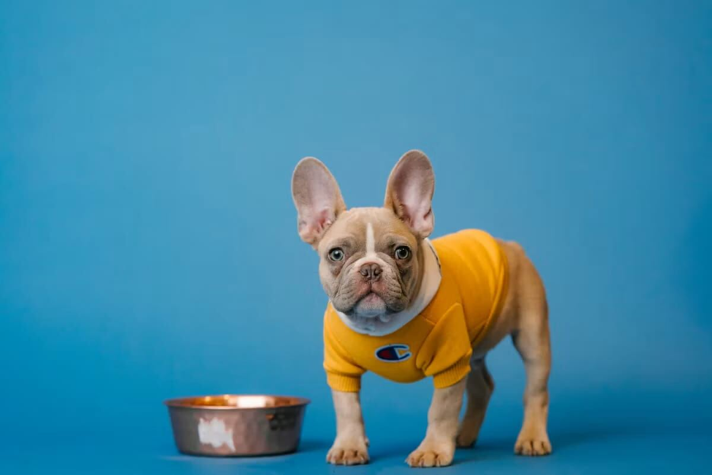
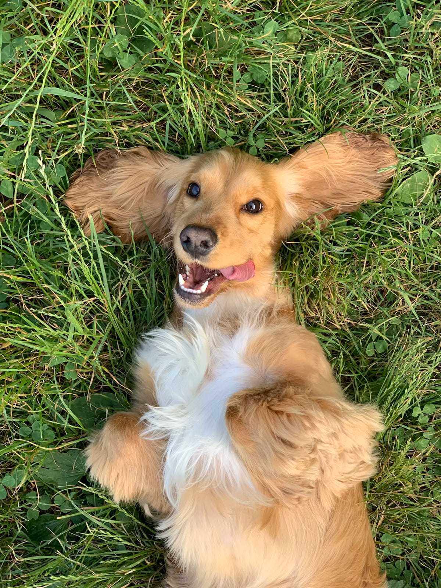
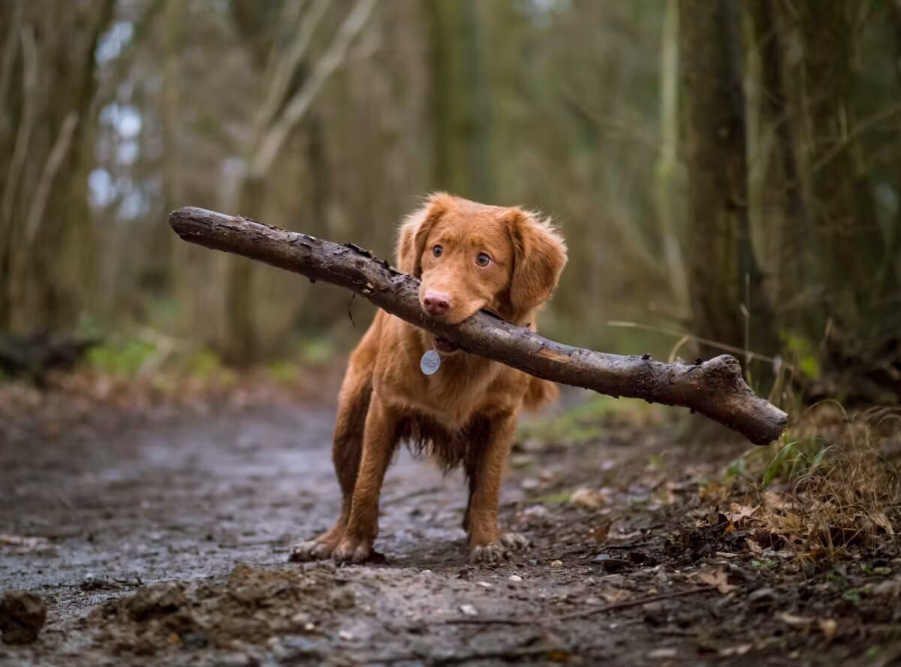

Dog training guides, from first commands to lasting habits.
Positive-reinforcement-based training for puppies and adult dogs — practical, step-by-step, and grounded in how dogs actually learn.
Basic Obedience Commands Every Dog Should Know
The five foundational commands, taught in the order that actually builds on each other — with the training-science reason each one works.

Clicker Training 101: A Beginner's Guide
Why a clicker communicates more precisely than a voice cue can, and how to charge, use, and eventually phase out the clicker in real training.

How Long Does It Take to House Train a Puppy?
Realistic timelines for house training by age and consistency level, and why "fully house trained" is a range, not a single milestone date.

How to Crate Train a Puppy: A Step-by-Step Guide
A gentle, week-by-week plan for crate training a puppy — building a positive association with the crate instead of a stressful one.

How to Stop Leash Pulling at Any Age
Why pulling gets accidentally rewarded on almost every walk, and the training method that removes that reward without pain-based corrections.

How to Teach a Reliable Recall (Come When Called)
A step-by-step method for building a recall your dog will actually use around real distractions — not just in a quiet living room.
Introducing a Dog to Swimming Safely
A gradual, positive method for introducing a dog to water, plus the safety basics — even confident swimmers need — for open water and pools.

Loose-Leash Walking Around Bikes, Joggers, and Skateboards
Why fast-moving wheels and joggers trigger a dog's prey drive differently than other distractions, and a specific training progression to walk calmly around them.
Off-Leash Recall Training: A Step-by-Step Progression
The safe, staged progression from long-line recall to genuine off-leash reliability, and how to know when a dog is actually ready for each stage.

Puppy Potty Training Schedule by Age: A Realistic Timeline
How often puppies really need bathroom breaks at each age, plus a week-by-week schedule that makes house training predictable instead of frustrating.

Teaching a Dog to Settle on a Mat or Bed
How to train a genuine, relaxed settle-on-a-mat behavior — one of the most practically useful commands for a calmer household.